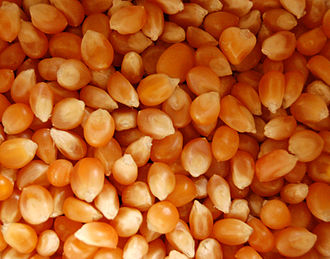

- Veja mais
MILHO DE PIPOCA
Pipoca ou popoca (no Pará também chamada pororoca) é um prato feito a partir de uma variedade especial de milho, o milho-pipoca (Zea mays everta), que estoura quando aquecido. Ao se aquecer os grãos desse milho de maneira rápida, a sua humidade interna é convertida em vapor. Num determinado ponto, a pressão estoura a casca externa, transformando a parte interna numa massa pouco consistente de amidos e fibras.


DESCRIÇÃO
O milho cultivado para a produção da pipoca é de uma variedade especial, com espigas menores que as do milho tradicional. Os seus grãos podem aparecer em vários formatos (achatados, pontiagudos etc.) e cores (como amarelo, branco, rosa, roxo etc.). Apresenta, como característica, grãos pequenos contendo amido duro ou cristalino. Possui a propriedade de estourar quando submetido ao aquecimento, originando a popular pipoca. Algumas variedades cultivadas são "Zélia" e "Colorado pop-1". É semeada normalmente nos meses de Setembro a Novembro (primavera na maior parte da América do Sul).
CULTIVO
Com espaçamento de 0,8 metros entre linhas e 0,2 metros entre plantas, normalmente usa-se entre 10 a 15 quilogramas por hectare de sementes. A colheita é manual ou mecânica, com os grãos em torno de 16 e 18 por cento de humidade. O milho-pipoca deve ser comercializado com teor de humidade em torno de 12 e 13 por cento.
HISTÓRIA
Os primeiros europeus que chegaram ao continente americano descreveram a pipoca, desconhecida para eles, como um salgado à base de milho usado pelos indígenas tanto como alimento, como enfeite para o cabelo. Sementes de milho usadas para fazer pipoca foram encontradas por arqueólogos não só no Peru, como também no atual Estado de Utah, nos Estados Unidos, o que sugere que ela fazia parte da alimentação de vários povos americanos. Sabe-se que, inicialmente os indígenas preparavam a pipoca com a espiga inteira sobre o fogo, depois passaram a colocar só os grãos sobre as brasas - até inventarem um método mais sofisticado: cozinhar o milho numa panela de barro com areia quente.
A pipoca já era vendida em feiras e parques nos Estados Unidos no século XIX. No fim desse período, surgiram os primeiros cinemas americanos e, com eles, vieram os ambulantes e os seus carrinhos com pipocas e guloseimas, mistura de pipocas, amendoim e açúcar queimado. No começo, os donos dos cinemas torciam o nariz e achavam que as pipocas distraíam os espectadores dos filmes.
Durante a Grande Depressão, a pipoca era relativamente barata e tornou-se popular. Assim, o negócio da pipoca prosperou e tornou-se numa fonte de renda para alguns agricultores em dificuldades.
Após a Segunda Guerra Mundial, com a popularização da TV, houve uma pequena queda no consumo,[7] porque os americanos abandonaram as salas de cinema para ficar em casa. Mas logo criou-se o hábito de comer pipoca em frente à televisão, o que voltou a aumentar a procura da pipoca significativamente.
PIPOCA DE MICRO-ONDAS
Em 1981, a gigante americana General Mills, registou a primeira patente de pipocas de micro-ondas. O que foi responsável pelo crescimento assustador do seu consumo. Mesmo sendo considerado um alimento que pode apresentar certos riscos de saúde, o consumo de pipocas, após esta invenção, subiu consideravelmente no ano seguinte.
DIA NACIONAL DA PIPOCA
O Dia da Pipoca no Brasil é comemorado no dia 11 de março. Já no Estados Unidos, a data escolhida pelo Popcorn Board é o dia 19 de janeiro. A pipoca é considerada o principal lanche e alimento símbolo do estado americano do Ilinóis, desde o ano de 2003.